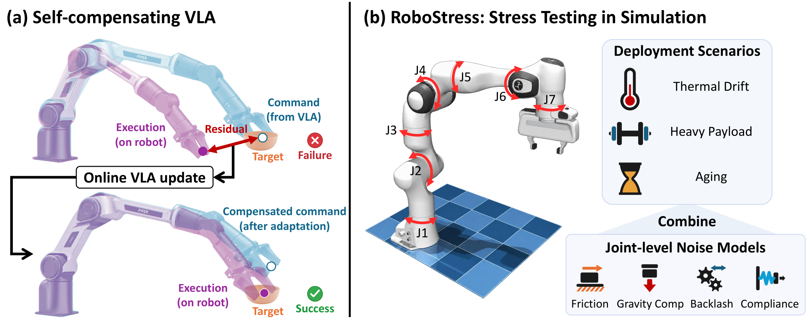
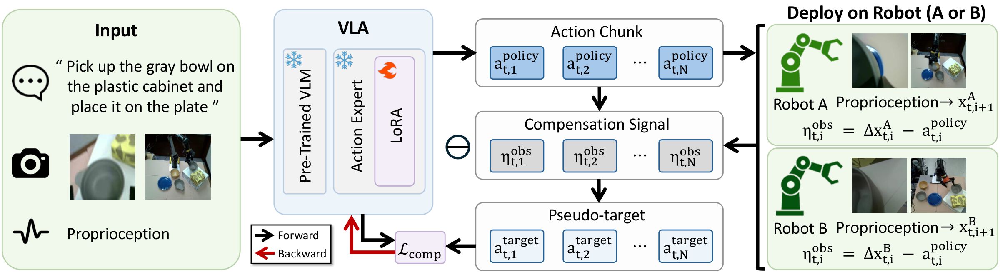
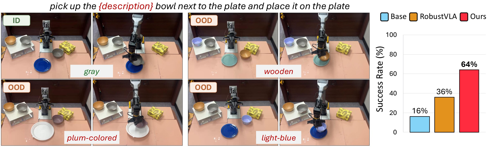
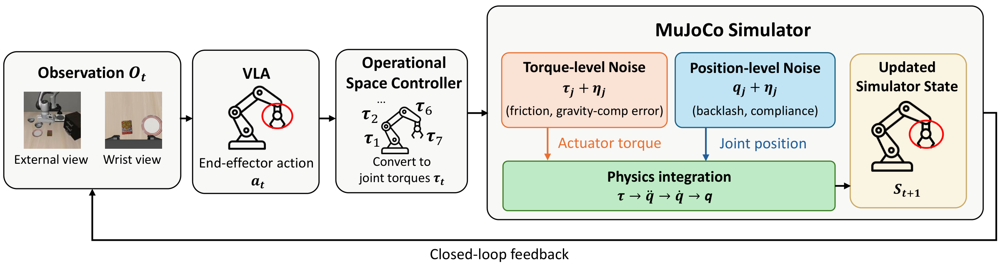
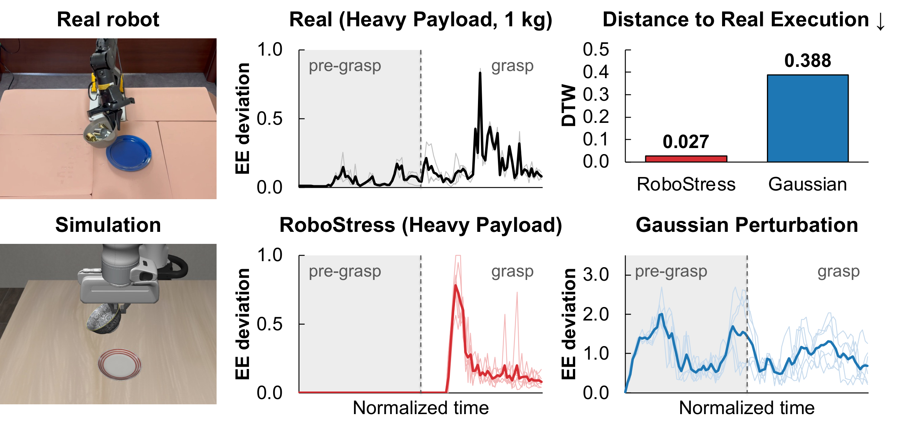

Robots don’t move exactly as commanded. Self-compensating VLA learns from that gap while it runs, with no rewards, no labels, and no change to the robot’s controller.
Vision-language-action (VLA) policies often fail when a robot's executed motion deviates from their commanded action. Such execution errors arise from the robot's mechanics and operating conditions, such as wear and payload changes. We propose self-compensating VLA, a deployment-time adaptation method that enables a VLA policy to pre-compensate for the robot's execution errors when generating commands. Without task rewards or labels, it updates the policy online using the residual between the action commanded by a VLA and the motion executed by the robot. To stress-test VLA robustness across execution conditions that are impractical to cover with physical robots alone, we introduce RoboStress, a controlled simulation benchmark. It combines established joint-level models of friction, backlash, compliance, and gravity-compensation error into seven deployment scenarios whose execution errors depend on the robot's state and motion history. On RoboStress, self-compensating VLA achieves higher average task success than both the base policies and methods that build in robustness during training. On two physical robot arms with different usage histories, it raises the average task success rate by more than 30 percentage points on each arm, and the gains extend to objects not seen in the task demonstrations.

(a) Self-compensating VLA updates the policy online using command-execution residuals and generates subsequent commands that pre-compensate for execution errors. (b) RoboStress combines four established joint-level models into controlled deployment scenarios in simulation to stress-test VLA robustness.

A frozen VLA with trainable LoRA adapters predicts an action chunk, which the robot executes. The residual ηobs between the commanded and executed motion forms a pseudo-target, which the compensation objective uses to update only the LoRA adapters online during deployment.
Measure the residual. After each executed step, proprioception tells us how far the executed end-effector motion Δx deviated from the command: ηobs = Δx − apolicy. The residual needs only the issued commands and proprioception, so no task reward, label, or model of the error source is required.
Build a compensated target. Subtract the residual from the command: atarget = apolicy − ηobs. This is the command that would have produced the intended motion.
Adapt online. Update rank-4 LoRA adapters on the action expert of π0 / π0.5 with a flow-matching loss toward the target, plus an anchor term that limits drift. Later chunks then pre-compensate for the robot’s errors, and the low-level controller is left untouched.
A new AgileX Piper arm (Robot A) and one used for a year (Robot B). Both show real command-execution mismatch (mean normalized residual 32.9% and 35.0%). Pick a robot, backbone, and task to compare the base policy with ours.
| Task | Robot A | Robot B | ||||||||||
|---|---|---|---|---|---|---|---|---|---|---|---|---|
| π0.5 | π0 | π0.5 | π0 | |||||||||
| Base | RVLA | Ours | Base | RVLA | Ours | Base | RVLA | Ours | Base | RVLA | Ours | |
| 1 | 48 | 52 | 84 | 44 | 52 | 76 | 44 | 56 | 80 | 36 | 56 | 60 |
| 2 | 36 | 60 | 76 | 40 | 28 | 80 | 36 | 48 | 72 | 32 | 52 | 84 |
| 3 | 48 | 48 | 76 | 44 | 68 | 72 | 56 | 52 | 84 | 52 | 44 | 84 |
| 4 | 40 | 48 | 68 | 32 | 40 | 60 | 36 | 44 | 60 | 32 | 44 | 56 |
| Avg. | 43 | 52 | 76 | 40 | 47 | 72 | 43 | 50 | 74 | 38 | 49 | 71 |
Tasks 1–3: pick up the gray bowl (next to the plate / on the plastic cabinet / on the gift box) and place it on the plate. Task 4: open the cabinet’s top drawer. RVLA = RobustVLA.

Task 1 on Robot A with five bowl/plate variants absent from the teleoperation data (5 episodes each). Left: our rollouts with the gray bowl (ID) and the variants (OOD).
A fleet of worn, hot, or heavily loaded robots is impractical to assemble, and extreme settings risk hardware damage. RoboStress reproduces these conditions in simulation with joint-level models of Stribeck friction, gravity-compensation error, backlash, and compliance, and combines them into seven deployment scenarios.
Each column shows the same LIBERO episode in clean execution (top) and under the selected RoboStress scenario (bottom).

The operational space controller converts end-effector commands into joint torques. Friction and gravity-compensation error are added to the joint torques; backlash and compliance to the joint positions before physics integration. The resulting errors depend on the robot’s state and motion history, and a perturbation at one joint propagates through the whole arm.
| Scenario | Physical cause | Fric. | Grav. | Back. | Comp. | Severity over episode | Joints |
|---|---|---|---|---|---|---|---|
| Heavy Payload | grasped load | ✓ | ✓ | While grasping | all | ||
| Thermal Drift-Stribeck | temperature change | ✓ | Linearly increasing | all | |||
| Thermal Drift-Backlash | temperature change | ✓ | Linearly increasing | all | |||
| Aged Transmission | gear wear | ✓ | ✓ | Fixed | all | ||
| Aged Joint-Uniform | gear + bearing wear | ✓ | ✓ | ✓ | Fixed | all | |
| Aged Joint-Shoulder | gear + bearing wear | ✓ | ✓ | ✓ | Fixed | J1–J3 | |
| Aged Joint-Elbow | gear + bearing wear | ✓ | ✓ | ✓ | Fixed | J4 |

We replay a pick-and-place demonstration on a Piper arm carrying a 1 kg bowl and fit the Heavy Payload parameters to the resulting end-effector deviations. RoboStress captures the post-grasp rise in deviation and is far closer to the real profile (DTW 0.027) than the Gaussian action noise used in prior robustness evaluations (DTW 0.388).
Averaged over the four LIBERO suites (40 tasks, 20 episodes each). Domain randomization (DR) and RobustVLA build robustness in at training time and give inconsistent gains; self-compensating VLA adapts at deployment and improves on both backbones.
| Scenario | π0.5 | π0 | ||||||
|---|---|---|---|---|---|---|---|---|
| Base | DR | RobustVLA | Ours | Base | DR | RobustVLA | Ours | |
| Clean | 97.0 | 97.1 | 96.6 | 95.8 | 91.1 | 90.5 | 92.0 | 92.6 |
| Heavy Payload | 44.1 | 42.1 | 38.9 | 56.8 | 42.3 | 32.0 | 30.9 | 42.8 |
| Thermal Drift-Stribeck | 54.1 | 54.6 | 55.9 | 60.5 | 46.1 | 46.3 | 46.0 | 50.6 |
| Thermal Drift-Backlash | 83.4 | 84.5 | 83.1 | 84.8 | 75.5 | 77.3 | 77.3 | 78.8 |
| Aged Transmission | 33.2 | 39.7 | 40.2 | 41.8 | 26.8 | 22.9 | 23.8 | 28.9 |
| Aged Joint-Uniform | 29.5 | 36.0 | 33.8 | 38.6 | 23.0 | 22.4 | 20.0 | 24.0 |
| Aged Joint-Shoulder | 43.9 | 46.4 | 43.0 | 51.2 | 34.5 | 32.9 | 31.5 | 39.2 |
| Aged Joint-Elbow | 55.6 | 54.0 | 53.9 | 62.3 | 43.9 | 44.5 | 42.2 | 44.9 |
| Avg. | 49.1 | 51.0 | 49.8 | 56.6 | 41.7 | 39.8 | 38.8 | 44.2 |
Averages exclude Clean. Best result per backbone in bold.
@article{lee2026taming,
author = {Lee, Sohyun and Baek, Yoonjae and Won, Jaesang and Kim, Jinnyeong and
Kang, Hyunwoo and Baek, Seung-Hwan and Laptev, Ivan and Kwak, Suha},
title = {Taming {VLAs} under Robot Execution Errors: Self-Compensation and Stress Testing},
journal = {arXiv preprint arXiv:2609.37334},
year = {2026},
}